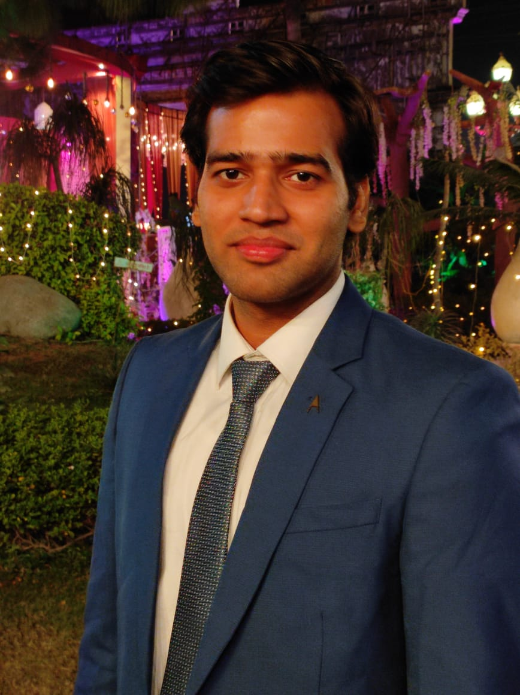

Mayank Sharma
Senior Software Engineer
Summary
Skilled Senior Software Engineer with experience of 2+ years in Microservices, Containerization, and cloud-native development. Masters from IIT Guwahati. An immediate joiner.
Professional experience
Observability Dashboards:
-
Dynatrace and Splunk were used to create customer-centric dashboards.
-
Large unclustered logs and metrics were translated into reliable alerts and warnings.
Clara Chatbot:
-
Built chatbot using RASA framework .
-
Used Kubernetes helm charts to manage and upgrade application containers.
5G Innovation Project:
-
Researched on 5G to develop industry-relevant solutions
NUCLEUS, Biosatellite program of IIT Guwahati
-
Head of Optics Team
-
With team efforts , built optical design and software solution in time-based manner
Compact Digital Holographic Microscope (Master's Thesis):
-
Developed diagnostic device that is cost-effective , portable and compact.
-
Device can be used in resource-limited environment.
Education
- M.Tech(RF and Photonics)
- Completed in 2020
- B.Tech(EEE)
- Completed in 2017
S.B.B.M Sarvodaya Vidyalaya, Shankaracharya Marg,Delhi
Skill Set
- Microservices Architecture
- Docker
- Kubernetes
- Cloud Platforms: GCP and Red hat Openshift
- Message Broker: Rabbit MQ
- Dashboard Development: Dynatrace and Splunk
- DBMS: MySQL, MongoDb, Redis
- API Development and Testing: Swagger and Postman
- Coding proficiency in Python and Restful API Services
- Frontend Technologies: HTML,CSS,Javascript
- Source Code Management: Github
Profile Image

Contact
Hobbies
Extra-curricular Activities
Thank
You !